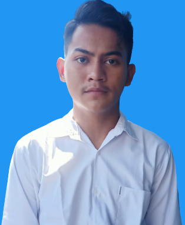

Biodata

Tentang saya
"Nama saya Chendy Tri Wardani, Saya menempuh pendidikan strata satu (S1) di Universitas Trunojoyo Madura dengan
mengambil program studi Teknik Informatika, jurusan Teknik Informatika,
Fakultas Teknik. Saya bertempat tinggal di Surabaya, tepatnya di alamat Jl. Dupak Masigit 5 no.16 Surabaya. Saya anak kedua dari ketiga bersaudara.
saya kerap aktif dalam beberapa kegiatan kemahasiswaan misalnya kegiatan organisasi. Saya mengikuti berbagai macam kegiatan yang mengarah pada hal yang positif.
Saya senang dengan mencoba hal-hal baru karena pengalaman yang saya dapatkan dari mencoba hal-hal baru. Saya juga senang melakukan hobi saya yaitu berolahraga,
di waktu luang saya terkadang mengikuti kegiatan futsal untuk mengisi kegiatan yang lebih produktif. Saya memiliki keinginan menjadi seorang programmer."
Motto
"Cobalah dengan hal-hal baru, jangan takut untuk mencoba hal-hal baru."